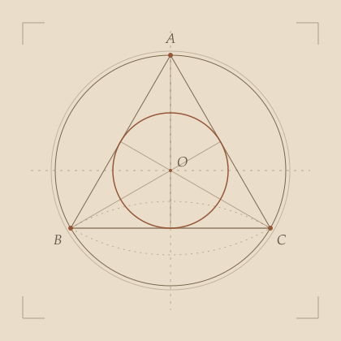

Mathematics · Wayne State University
Karim M.
Faraj.
Studying mathematics.
I’m a graduate student in mathematics at Wayne State University. My interests lie in partial differential equations, scientific computing, and mathematical modeling in climate, atmosphere–ocean systems, and biology.

Graduate student & researcherDetroit, Michigan